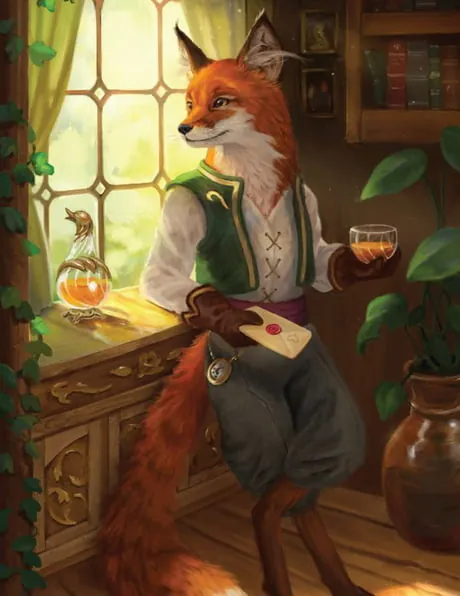
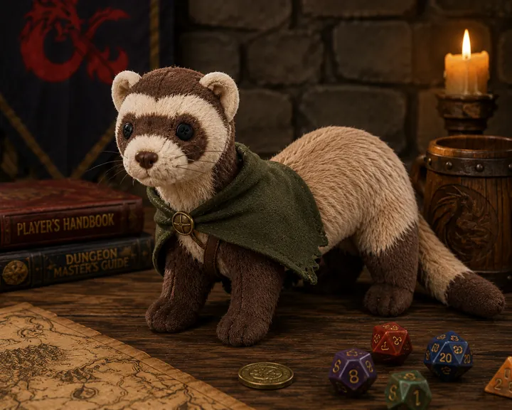
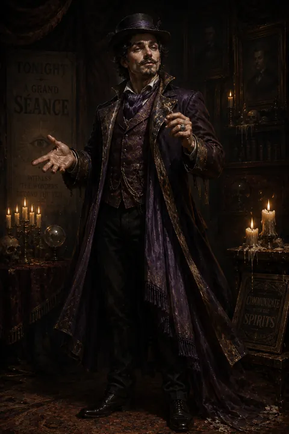
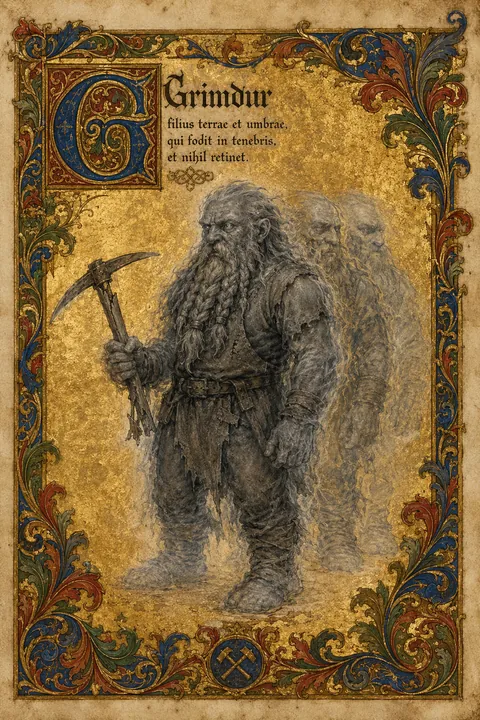
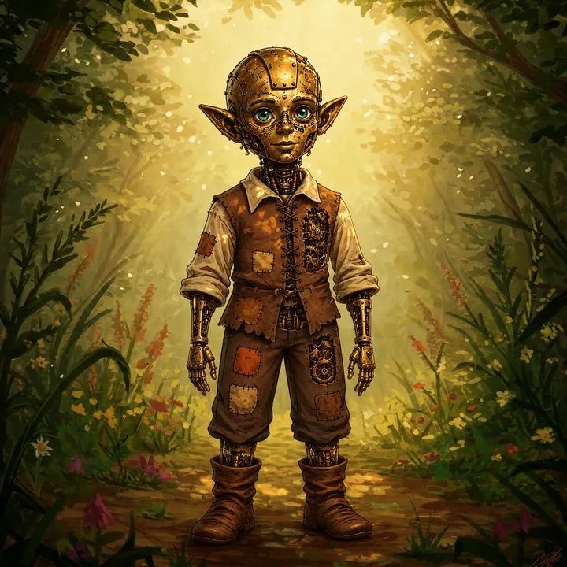
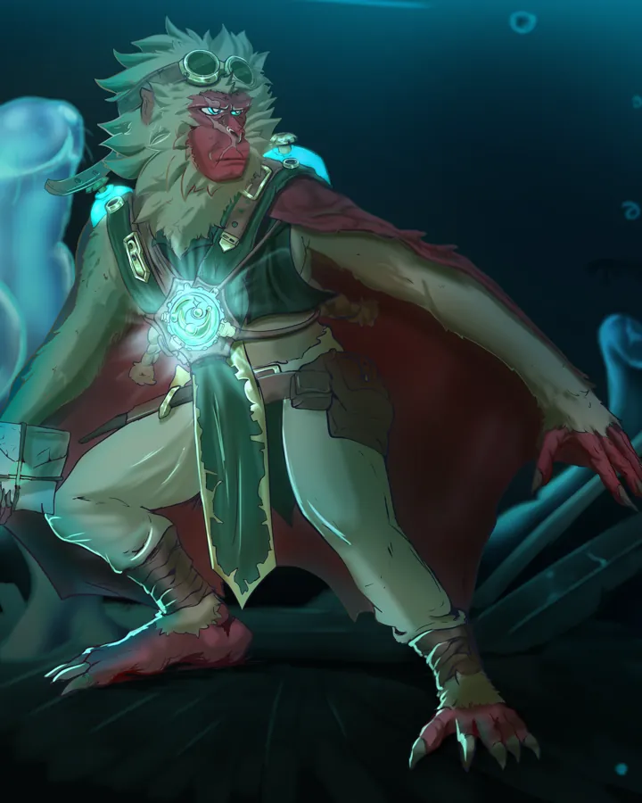

I · Postać główna
Jack [Leothern]
Wędrowny mediator z Whitewood, który uczy się, kiedy dłoń otworzyć — a kiedy pokazać pazury.
struny G·D·A·E · licznik ki · legenda Roga · imię prawdziwe
Dungeons & Dragons 5e · kampania
Archiwum postaci, notatek z sesji i materiałów o świecie. Każda postać ma własną stronę w stylu swoich dokumentów — oryginalne pliki leżą w jej archiwum.

I · Postać główna
Wędrowny mediator z Whitewood, który uczy się, kiedy dłoń otworzyć — a kiedy pokazać pazury.
struny G·D·A·E · licznik ki · legenda Roga · imię prawdziwe

II · Postać zapasowa
„Dla wszystkich — wcielenie chaosu. Dla siebie — wolna od wszelkich okowów.”
guzikowe oczy · orkiestra lokatorów · rzut czaru z dziką magią · Pisk

III
Okłamuje żywych, żeby ich ukoić — i nie wie, że przy okazji naprawdę dotyka umarłych.
trzy postaci · świeca · seans z pamiętnika · ostrze z myśli

IV
Syn ziemi i cienia, który drąży w ciemności i nie zatrzymuje niczego.
rozsypane litery · echa · złote okruchy · widzenie w szarości

V · Postać zapasowa IV
„Broń, która nie wiedziała, że jest bronią. Syn, który nie wiedział, że został zbudowany.”
skóra ↔ werk · dwa moduły · bilans wiedzy · teczka projektu

VI
„To nie był fuks. To była dostawa.”
pieczęcie · plomba · pakt przy stole · okienko Odbiorcy · głębokościomierz
Sesje I–XVII, od 24.08.2025 do 31.01.2026: Przestoje, Anchurus, Hydra, wampiry i wyprawa do Iron Wake.
Obremont, Święto Wina, tawerna „Smutna koniczyna” i folwark de la Lumbre (sesja stacjonarna 2: 25.07.2026).
Wioska zwierzoludzi w brzozowym lesie na granicy elfich puszcz (Vetora, prowincja Krong) — dom Jacka.
Wspólny Zwierzoludzki: geneza, filozofia i budowa wspólnego języka Whitewood.